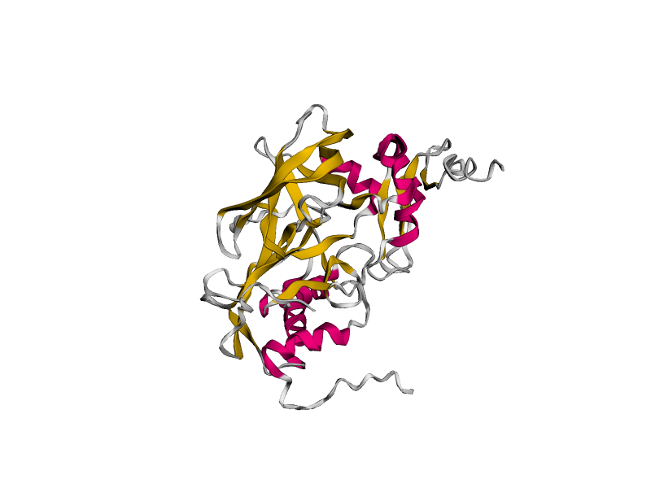
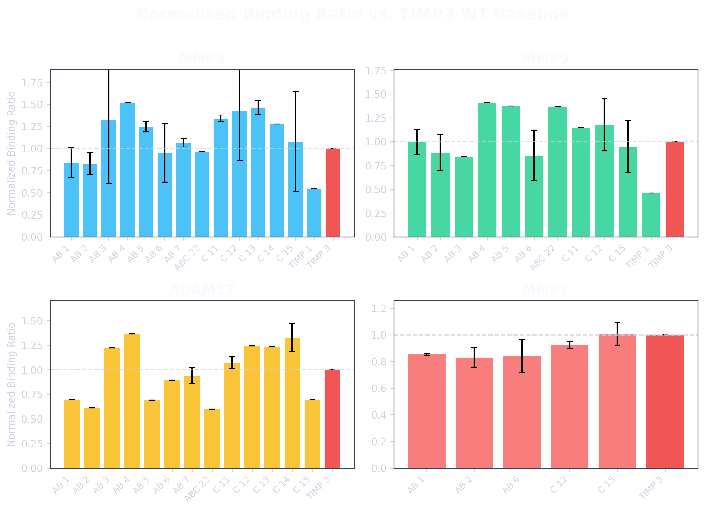
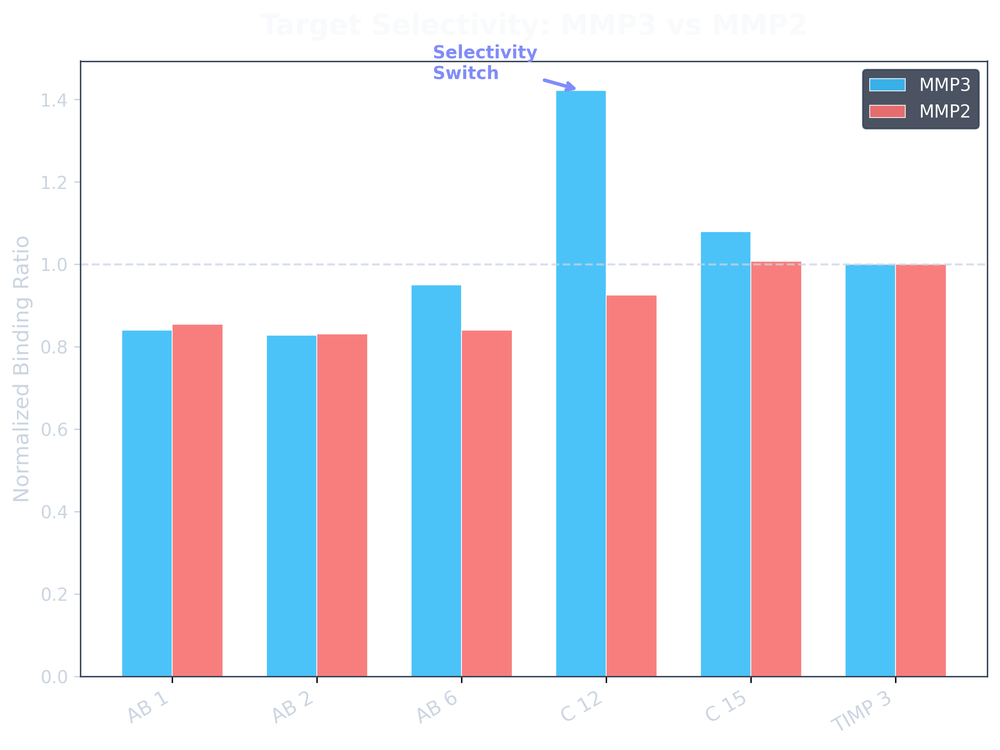

Background: MMPs, Cancer, and the Specificity Bottleneck
Matrix Metalloproteinases (MMPs) are zinc-dependent endopeptidases crucial for extracellular matrix (ECM) remodeling. In oncology, dysregulation of specific MMPs (e.g., MMP2, MMP9) is strongly associated with pathological conditions, facilitating tumor invasion, angiogenesis, and metastasis (Bonnans et al., 2014; Cathcart et al., 2015). A major clinical hurdle in targeting MMPs is their highly conserved active site across ~20 human family members. Previous broad-spectrum MMP inhibitors failed in clinical trials due to severe off-target toxicities and the paradoxical inhibition of tumor-suppressive MMPs (Winer et al., 2018). Therefore, highly specific targeting of distinct MMPs is required. By utilizing structural specificity via protein engineering of endogenous inhibitors like TIMP3, we can develop selective binders capable of discriminating between highly similar targets, paving the way for safe, targeted therapies (Raeeszadeh-Sarmazdeh et al., 2020).

Methods: Generative Design Pipeline
Our in silico pipeline bridges generative AI with rigorous structural validation to circumvent traditional high-throughput screening bottlenecks. RoseTTAFold Diffusion (RFdiffusion) hallucinates de novo structural loop backbones acting as molecular scaffolds against user-specified active sites on TIMP3. Poly-glycine coordinates are populated with specific amino acid identities using ProteinMPNN. High-fidelity structural validation is enforced via AlphaFold co-folding, extracting localized confidence metrics (Loop pLDDT and Interface PAE) and using a self-normalized T-score framework to natively stratify target-selective sequence candidates from promiscuous binders.
Results: Experimental Validation of Target Selectivity
Yeast surface display flow cytometry confirmed that the pipeline successfully isolates de novo variants that experimentally out-perform wild-type (WT) TIMP3 across multiple cancer-marker domains. Notably, our top variant, AB 4, achieved a 1.52x binding enrichment at MMP3 compared to the WT baseline.


Conclusions: The Selectivity Switch
Variant C 12 demonstrated a vital 'Selectivity Switch,' exhibiting strong preferential binding to MMP3 over the highly homologous MMP2 target, proving that AI-guided loop engineering can effectively break the cross-reactivity barrier that plagued past clinical candidates.
Future Clinical Directions
The ability to rapidly generate target-specific binders opens new avenues for personalized medicine. Future clinical applications include developing these variants into targeted therapeutics that neutralize pro-tumorigenic MMPs without off-target toxicity. Additionally, these binders can be conjugated to radioisotopes or fluorophores for precision diagnostic imaging of patient-specific tumor microenvironments. Ultimately, this pipeline could be integrated into clinical workflows where patient biopsies inform the rapid, on-demand generation of custom therapeutic binders.
References
- Bonnans, C., et al. (2014). Remodelling the extracellular matrix in development and disease. Nat Rev Mol Cell Biol.
- Cathcart, J., et al. (2015). The Role of Tumor-Associated Macrophages in Matrix Remodeling and Metastasis. Cancer Res.
- Raeeszadeh-Sarmazdeh, M., et al. (2020). Protein Engineering of TIMPs for Target Specificity. J Biol Chem.
- Winer, A., et al. (2018). The Evolution of Targeted Cancer Therapy. Nat Rev Clin Oncol.